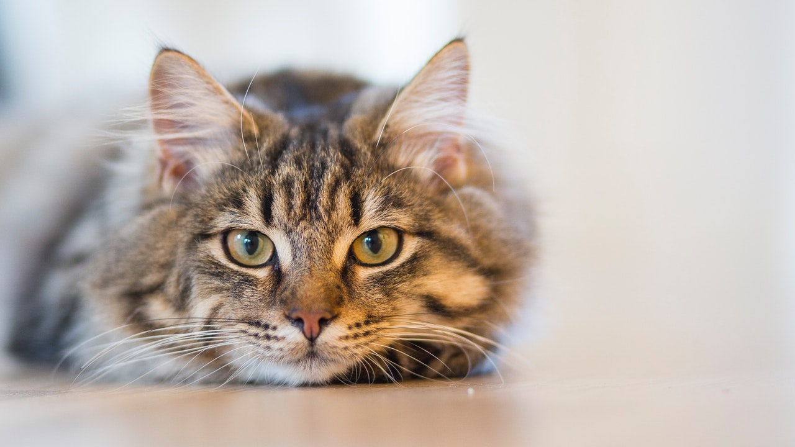

With school, it does not hurt to have a furry friend to keep you company. School can be overwhelming at times and lonely even. Despite there being a variety of choices, a cat is one of the best furry friends you can choose. 